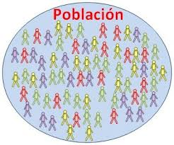
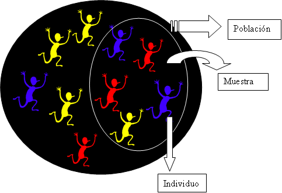
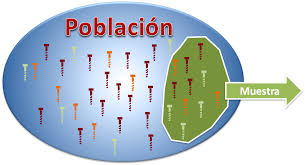
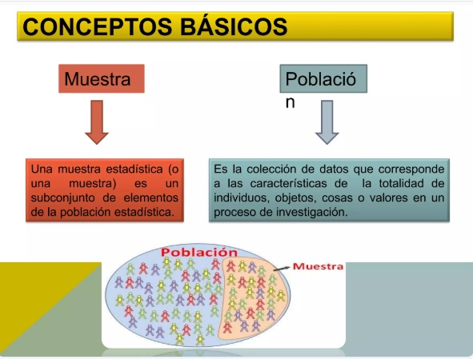

INTRODUCCIÓN A LA ESTADÍSTICA
Ahora, vamos a conocer algunos conceptos clave de la estadística que necesitas entender:
- Población: Es el grupo completo de elementos que estamos analizando en un estudio estadístico.

- Individuo: Cada uno de los elementos que forman parte de esa población. El total de individuos en una población se suele representar con la letra N.

IMPORTANTE:
Aunque los términos "población" e "individuo" puedan parecer referirse solo a personas, en realidad pueden aplicarse a cualquier cosa. Por ejemplo, podemos estudiar los televisores que se fabrican en una planta, la cantidad de vehículos que circulan por una carretera en un fin de semana de agosto, o los programas de televisión más populares en un horario específico. En estos casos, cada televisor, vehículo o programa sería un "individuo" dentro del estudio.
A veces, es necesario estudiar a todos los elementos de la población, lo que implica un estudio completo y detallado. Un ejemplo de esto es cuando se realiza el censo de población de una ciudad. Sin embargo, estudiar a todos los elementos puede ser muy costoso en términos de tiempo y dinero. Por eso, generalmente se elige solo una parte, lo que se llama un estudio muestral.
- Muestra: Es un subconjunto de la población con el que realmente se hace el estudio.
- Tamaño de la muestra: Es el número de elementos que componen la muestra, y se representa con la letra n.

Seleccionar bien la muestra es crucial para que los resultados obtenidos puedan aplicarse a toda la población. Se recomienda que el tamaño de la muestra sea acorde al objetivo que se quiere del estudio, pero también debe incluir diferentes grupos o características de la población (Es decir que esta muestra debe ser representativa) Por ejemplo, si queremos conocer los gustos culinarios de los jóvenes, no sería suficiente con preguntar a quienes salen de una pizzería, ya que hay otros jóvenes que prefieren distintos tipos de comida y no frecuentan ese tipo de lugares. Si solo preguntamos allí, la muestra no representaría a toda la población de jóvenes.

 ONLINE: Visita el siguiente
ONLINE: Visita el siguiente